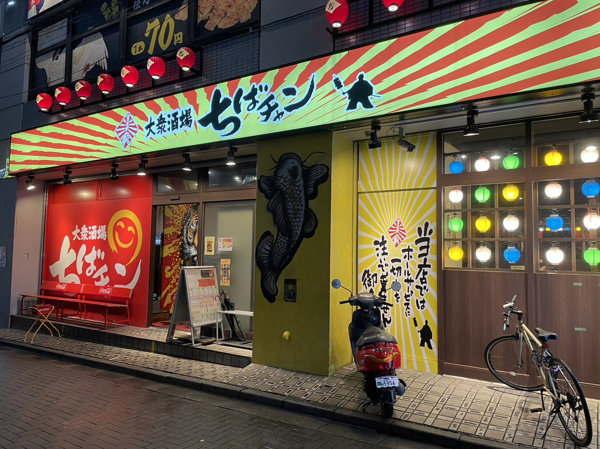
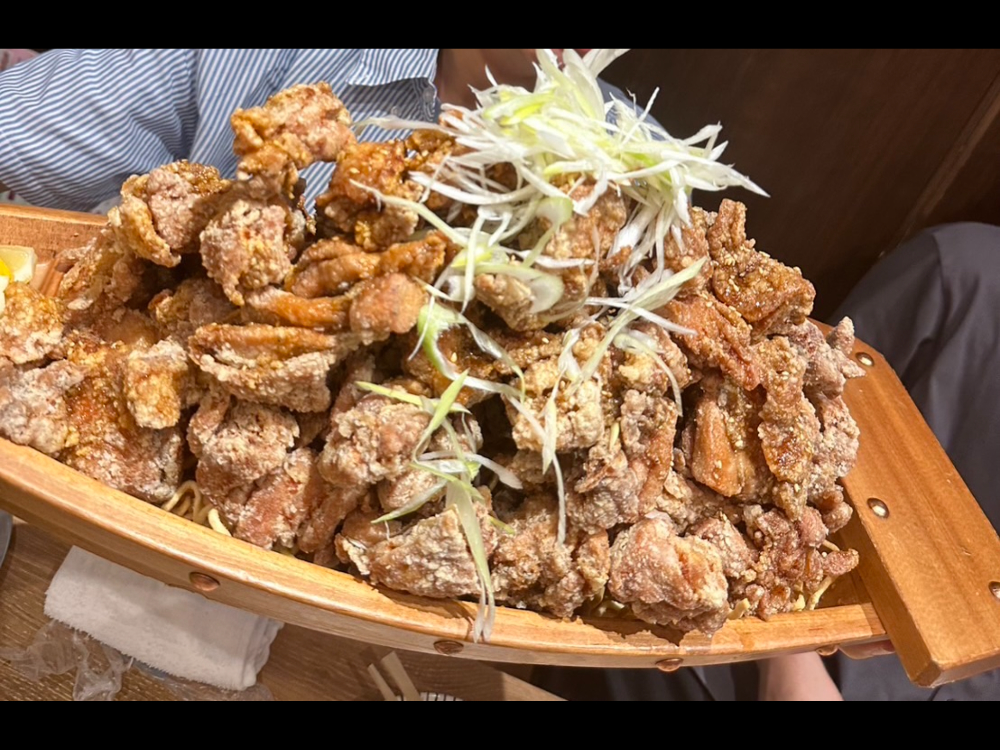
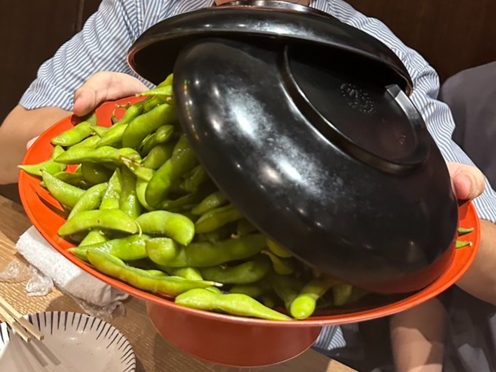
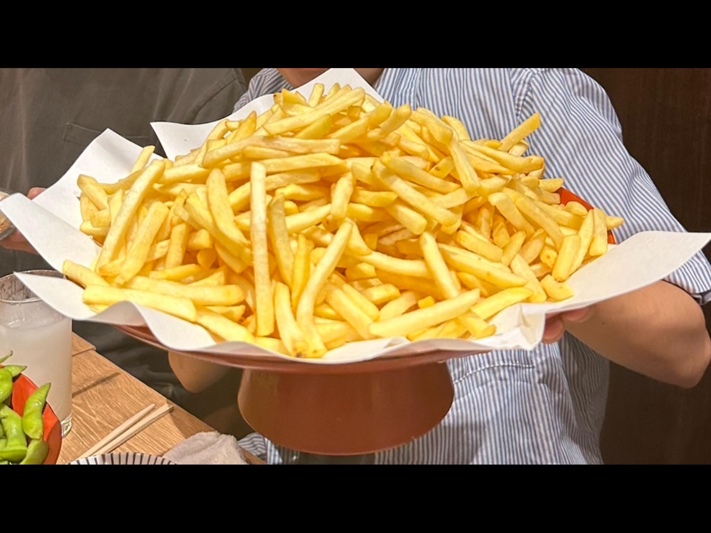

その名の通り、誰もが行きやすい居酒屋！
言わずと知れた名物、量が通常の3倍の「バカ盛り」や10倍の「大バカ盛り」など、超ハイコスパのお料理が多数！！
大バカ盛りで長ーく楽しめ、毎日でも気軽に行けちゃう！

からあげバカ盛り 大人数でも十分な量カラっとジューシーで最高！大きな船に乗ってくる！

枝豆バカ盛り 想像以上で食べきれない！酒のつまみにもぴったり！

ポテトバカ盛り 揚げたてホクホクな美味しいポテト！こんなにあっても足りないくらい！

バカ盛りだけでなく、そのほかの一品料理も美味しいものばかり。
特に活アジの刺身などは絶品です！
大学からも近いので、大学が終わったら友達と一緒に行って、美味しい料理を楽しみつつ、楽しい思い出を作りましょう！
月～日、祝日、祝前日: 17:00～翌5:00 （料理L.O. 翌4:00 ドリンクL.O. 翌4:00)
住所: 千葉県船橋市前原西２-15-16 SAKAIビル１階
電話番号: 047-409-0728